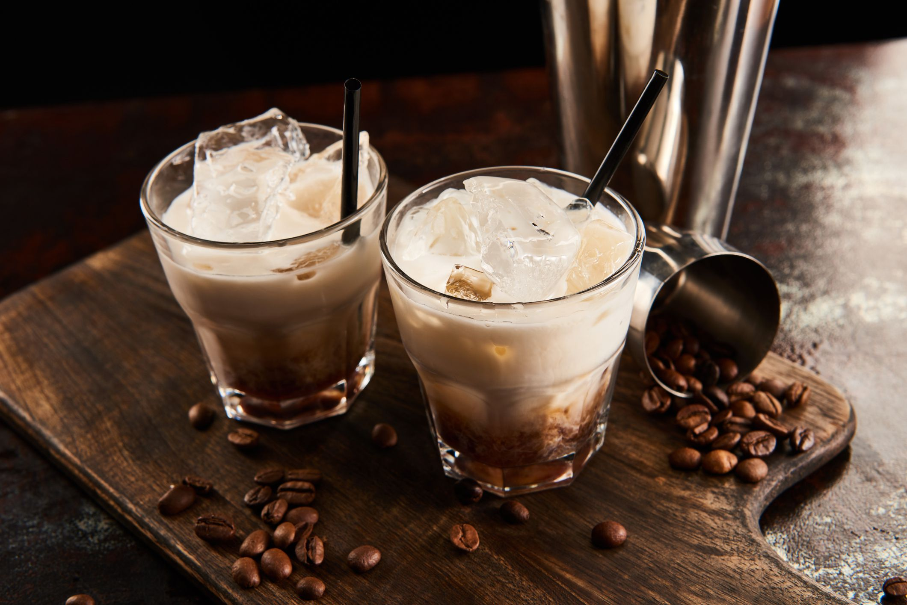

<link rel="stylesheet" href="../styles.css"/>
<main>
  <h1 id="header">Coffee Liqueur</h1>
  <h3>A charming and elegant cocktail</h3>
  
  <p>To be served alone as a cordial cocktail, mix it with milk or vodka, or use it in any recipe that calls for coffee liqueur.</p>
  <div>
    <h4>Ingredients</h4>
    <ul>
      <li>4 cups white sugar</li>
      <li>4 cups water</li>
      <li>3/4 cups instant coffee granules</li>
      <li>4 cups vodka</li>
      <li>2 tablespoons vanilla extract</li>
    </ul>
  </div>
  <div>
    <h4>Instructions</h4>
    <ol>
      <li>Bring sugar and water to a boil in a 3-quart saucepan over medium heat. Reduce the heat and simmer for 10 minutes.</li>
      <li>Remove from the heat, stir in instant coffee, and allow to cool, 30 to 45 minutes. </li>
      <li>When cool, stir in vodka and vanilla extract.</li>
      <li>Pour into clean bottles. Close the bottles tightly and store in a cool dark place. Let it rest over night.</li>
    </ol>
  </div>
  <a href="#header">Return to top</a>
  <a href="../index.html">Return to main page</a>
</main>
